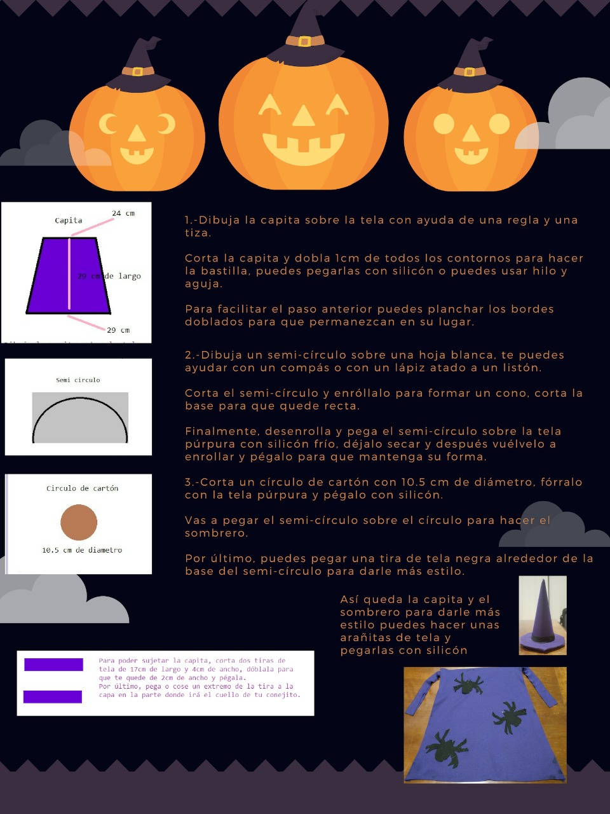
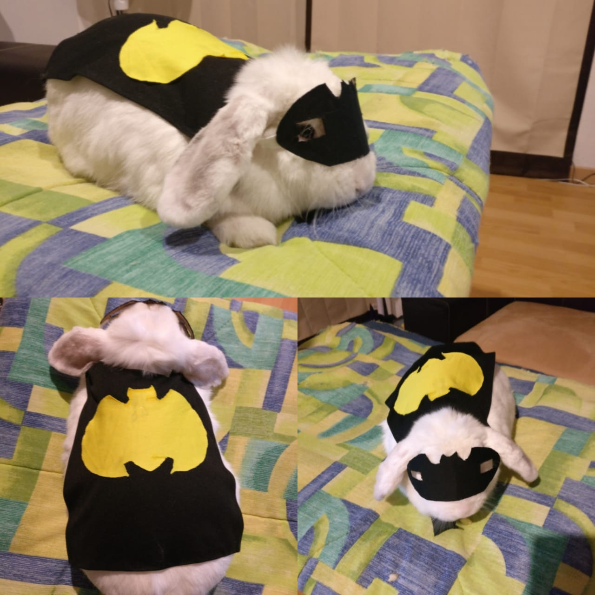
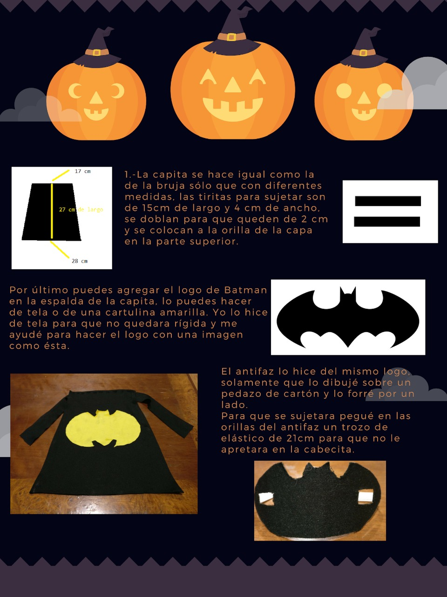

Valentina Brujita 🔮
Abra Kadabra! Que mi popo se convierta en banana 💩 💩 💩 = 🍌🍌🍌
Para hacer este disfraz vas a necesitar lo siguiente:
-
50 cm de Lickra Magaly en color purpura (esta la conseguí en Parisina y me costo $19.99 pesitos mexicanos)
-
1 Hoja blanca
-
1 pieza de cartón
-
Hilo y aguja (Les dejo el link de un mini kit de costura que les puede ser muy útil)
-
Un trozo de tela Lickra Magaly en color negro (esta la puedes tomar del segundo disfraz ya que te va a sobrar tela 😉)

Nananana Batman 🦇

Santos Recórcholis! Quien habrá sido el perpetrador del robo de mis manzanas 😱🐰💔
Ay Valentina! Ya se te olvido que te las comiste todas tú solita 😒, ahora te esperas hasta la quincena. Ahora si vamos a lo bueno 👇
Para hacer este disfraz necesitas:
-
50 cm de Lickra Magaly en color negro (esta la conseguí en Parisina y me costo $19.99 pesitos mexicanos)
-
15 cm de elástico delgado
-
1 pieza de cartón
-
Tijeras
-
Silicón frío
-
Hilo y aguja (opcional)
-
Un trozo de tela Lickra Magaly en color amarillo (puedes usar cartulina amarilla aunque va a quedar algo rígido. Otra alternativa a comprar los 50cm en Parisina es ver si tienen retazos de tela y será aún más barato)

Si les gustaron los disfraces de Valentina compártanlo con sus amigos en sus redes sociales, les prometo que se morirán de ternura 😊.
Mis Herramientas de trabajo
Laptop: Acer Aspire R15 Convertible
Cámara: Nikon D5300
Celular: Oneplus 3T